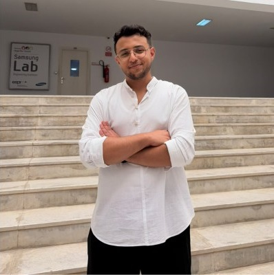

Hafedh Jendoubi
I design and build scalable microservices, AI-powered applications and reliable CI/CD pipelines, with a focus on clean, high-performance software.

01 / educationEducation
Engineering Degree in Computer Science
Academic honors: Excellent
02 / experienceExperience
Full Stack Developer Intern — Moonside Consulting & Services
Independently developed an AI-powered enterprise social network using Spring Boot microservices, Next.js and Python FastAPI. Integrated Kafka, Elasticsearch and Redis, with Docker-based deployment and CI/CD via GitHub Actions.
Freelance Full Stack Developer — VisshopAI
Built and improved full-stack features with the MERN stack, working directly with the client to gather requirements, ship solutions and improve application performance.
Full Stack Developer — VisshopAI
Developed a full-stack application with React, Django and MongoDB, integrating a Python-based NLP chatbot to automate user queries, and set up CI/CD workflows with GitHub Actions.
Full Stack Developer Intern — Centre National de l’Informatique
Designed interfaces in Figma and implemented responsive React frontends, improving mobile usability and reducing bounce rate by 25%. Developed Node.js APIs that cut average server latency from 500ms to 300ms, improving efficiency and scalability. Managed tasks with GitHub Projects and version control with Git.
03 / projectsProjects
SustainaFood
MERN application with AI integration: Python and Flask for AI-powered data analysis, GitHub Projects for task management, GitHub Actions CI/CD, SonarQube Cloud for code quality and Google Colab for model training.
EventSphere
Microservices app integrating H2, MySQL, MongoDB and PostgreSQL, with Eureka service discovery, Keycloak authentication, Docker containers and an Angular frontend.
Spring Boot & DevOps
Modular clean-architecture application with JPQL queries, scheduled tasks and AOP logging. Jenkins CI/CD with SonarQube, Docker and Nexus, plus Prometheus and Grafana monitoring.
Siyahi Bank
Banking platform built by a six-member team, with chat, account, user, leave and loan management. Symfony for the web app, JavaFX for desktop and Flutter for mobile, ensuring cross-platform integration.
Mental Health Consultation
Interactive website where users sign up as patients or doctors. Patients book treatments, find offices and join health events; doctors manage patient lists. I built the database, account creation and login, user profiles, and admin/user interfaces.
Smart Coworking Space
Desktop app to manage coworking clients, employees and sessions. I built a secure employee login, a chat server for employee communication, and an Arduino-powered badge system for personnel-room access.
Stranded
Our first ESPRIT project: a 2D game in C with SDL on a Linux VM, built by the 6-person team Gen-Z. I handled the loading screen, main menu, settings and minimap, and we added an Arduino controller. Presented at the GD3 event.
04 / skillsSkills
- Programming
- Python, Java, JavaScript, TypeScript, C/C++, PHP
- Frontend
- React, Angular, Next.js, HTML, CSS
- Backend
- Spring Boot, Django, Node.js, .NET
- Databases
- PostgreSQL, MySQL, MongoDB
- Tools & DevOps
- Git, GitHub, Docker, GitHub Actions, Jenkins, SonarQube, Prometheus, Grafana
- Languages
- Arabic (Native), English (Professional), French (Professional)
05 / contactLet’s work together
I’m open to software engineering opportunities and freelance projects. Feel free to reach out.